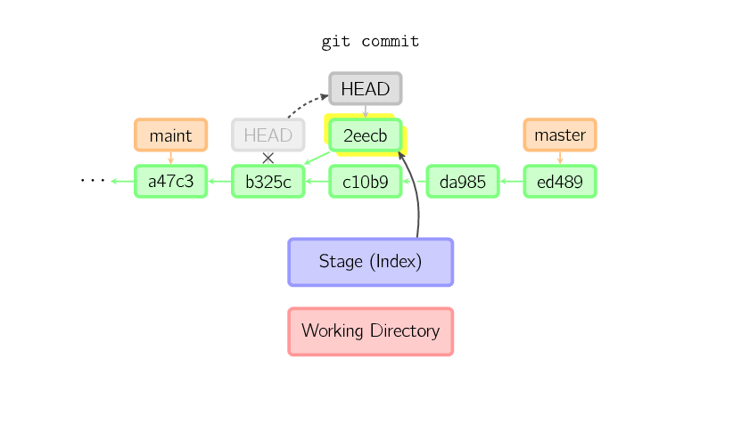

Why did my Git repo enter a detached HEAD state?
I ended up with a detached head today, the same problem as described in: git push says everything up-to-date even though I have local changes
As far as I know I didn't do anything out of the ordinary, just commits and pushes from my local repo.
So how did I end up with a detached HEAD?
Answer
Any checkout of a commit that is not the name of one of your branches will get you a detached HEAD. A SHA1 which represents the tip of a branch still gives a detached HEAD. Only a checkout of a local branch name avoids that mode.
See committing with a detached HEAD
When HEAD is detached, commits work like normal, except no named branch gets updated. (You can think of this as an anonymous branch.)

For example, if you checkout a "remote branch" without tracking it first, you can end up with a detached HEAD.
See git: switch branch without detaching head
Meaning: git checkout origin/main (or origin/master in the old days) would
result in:
Note: switching to 'origin/main'. You are in 'detached HEAD' state. You can look around, make experimental changes and commit them, and you can discard any commits you make in this state without impacting any branches by switching back to a branch. If you want to create a new branch to retain commits you create, you may do so (now or later) by using -c with the switch command. Example: git switch -c <new-branch-name> Or undo this operation with: git switch - Turn off this advice by setting config variable advice.detachedHead to false HEAD is now at a1b2c3d My commit message
That is why you should not use git checkout anymore, but the new git
switch command.
With git switch, the same attempt to "checkout" (switch to) a remote branch
would fail immediately:
git switch origin/main fatal: a branch is expected, got remote branch 'origin/main'
To add more on git switch:
With Git 2.23 (August 2019), you don't have to use the confusing git
checkout command anymore.
git switch can also checkout a branch, and get a detach HEAD, except:
- it has an explicit
--detachoption
To check out commit
HEAD~3for temporary inspection or experiment without creating a new branch:git switch --detach HEAD~3 HEAD is now at 9fc9555312 Merge branch 'cc/shared-index-permbits'
- it cannot detached by mistake a remote tracking branch
See:
C:\Users\vonc\arepo>git checkout origin/master Note: switching to 'origin/master'. You are in 'detached HEAD' state. You can look around, make experimental changes and commit them, and you can discard any commits you make in this state without impacting any branches by switching back to a branch.
Vs. using the new git switch command:
C:\Users\vonc\arepo>git switch origin/master fatal: a branch is expected, got remote branch 'origin/master'
If you wanted to create a new local branch tracking a remote branch:
git switch <branch>
If
<branch>is not found but there does exist a tracking branch in exactly one remote (call it<remote>) with a matching name, treat as equivalent togit switch -c <branch> --track <remote>/<branch>
No more mistake!
No more unwanted detached HEAD!
And if you git switch <tag> instead of git switch --detach <tag>, Git 2.36
will help you to remember the missing --detach option.
Suggest
I reproduced this just now by accident:
-
lists the remote branches
git branch -r origin/Feature/f1234 origin/master
-
I want to checkout one locally, so I cut paste:
git checkout origin/Feature/f1234
-
Presto! Detached HEAD state
You are in 'detached HEAD' state. [...])
Solution #1:
Do not include origin/ at the front of my branch spec when checking it out:
git checkout Feature/f1234
Solution #2:
Add -b parameter which creates a local branch from the remote
git checkout -b origin/Feature/f1234 or
git checkout -b Feature/f1234 it will fall back to origin automatically